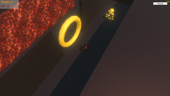
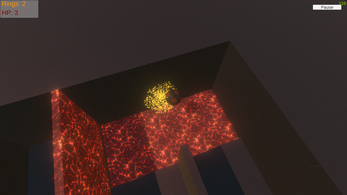
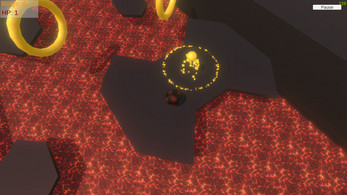

Lava Bounce
A 3D platformer inspired by to 2000's classic game: "Bounce"
This Project was made to demonstrate my technical knowledge of the unity game engine. As part of my internship at "Speak Geek?" I made this project focusing on simulating realistic physics and various fundamentals of the game engine such as serializing objects to .json files.
Being a demo, the game only features one level, but is packed with difficult to implement features.

